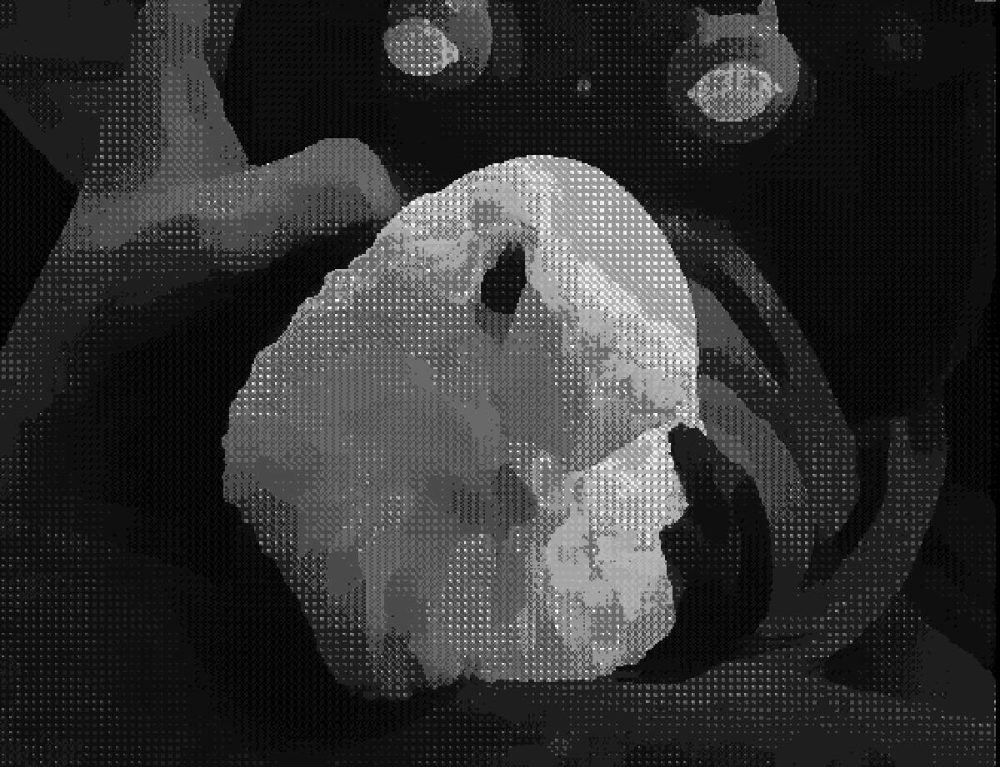
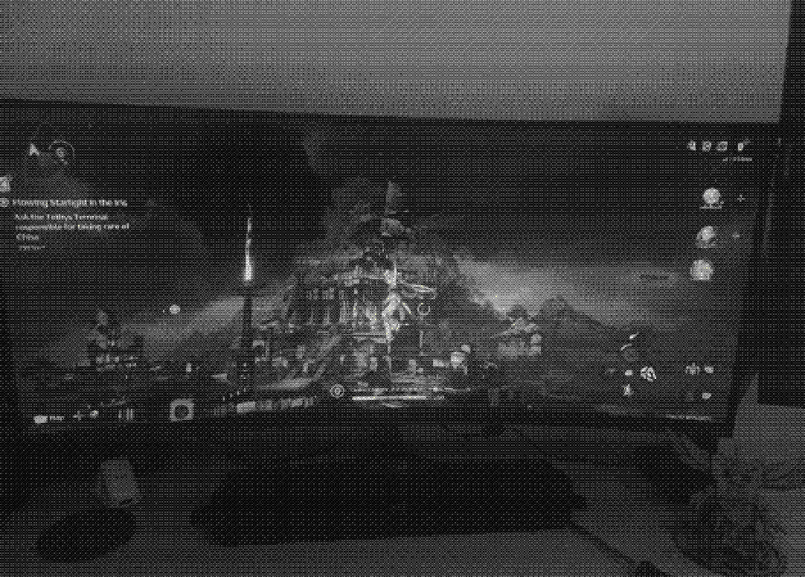
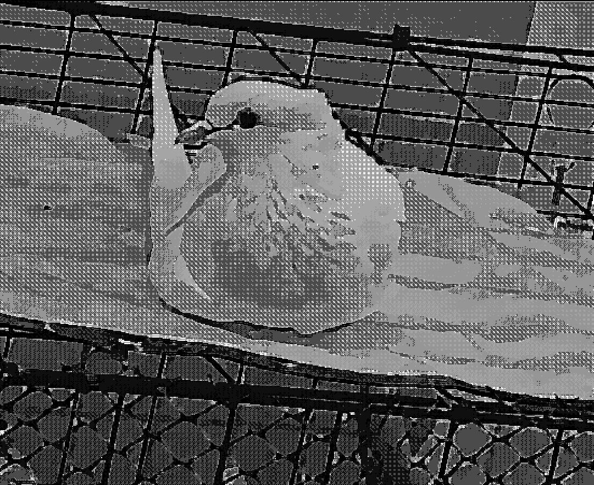
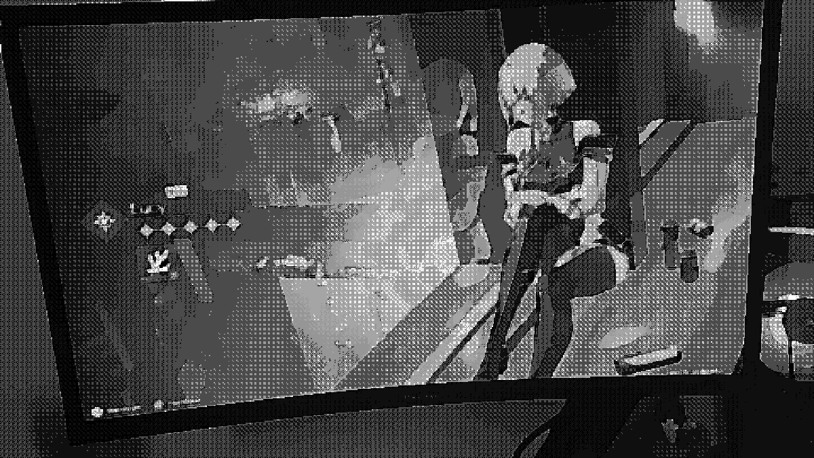

últimas notícias!!!! (sim, é clickbait)
oiii!
eu uso essa página bem de vez em nunca. é um blogzinho só que escrevendo pouco. sei lá o que isso configura. um mini blog?
eu espero colocar bastante fotinhas aqui! principalmetne de passáros, e mais especificamente de pombinhos. mas deve ter animais aleatórios também. ou nada! não confie em mim!
pera, voce disse pombos?

sim! eu tenho dois pombinhos de estimação, a Akira e o Anasui. e fora eles eu alimento muito pombo na rua e tiro foto de qualquer um que tiver chance.
um digital garden?
quando eu comecei a montar esse site, era isso que eu queria que ele fosse. agora tá uma mistura estranha disso, um personal website, um commonplace book e... sei lá.
monitor novo!!

demorou horrores pra essa desgraça chegar, mas a espera valeu a pena demais. a imersao nos jogos é surreal, fora que so 165hz de taxa de atualização fazem mais diferença do que eu esperava (usei 60hz a vida toda porque era meio ateia disso....). em breve vou ate jogar competitivo decentemente
eu não quero chamar de nada definitivo porque não pretendo delimitar o que eu posso ou não colocar aqui...
a única coisa que eu posso dizer é que isso é definitivamente algo (?)

aqui vai mais uma fotinha da minha querida, só porque... sei lá. por que nao?
"wo wo wo wo", akira 2025
lucy veio pra casa!!

nem gravei os pulls porque foi logo pity 20... e ainda ganhei o 50/50!! cara, acho que foi a primeira vez que ganho um 50/50 na vida.
pombinhos locais botam ovo
surpreendendo todo mundo que achava serem dois machos por causa dos meses de convicência amorosa; sim, eles fizeram um ovinho!